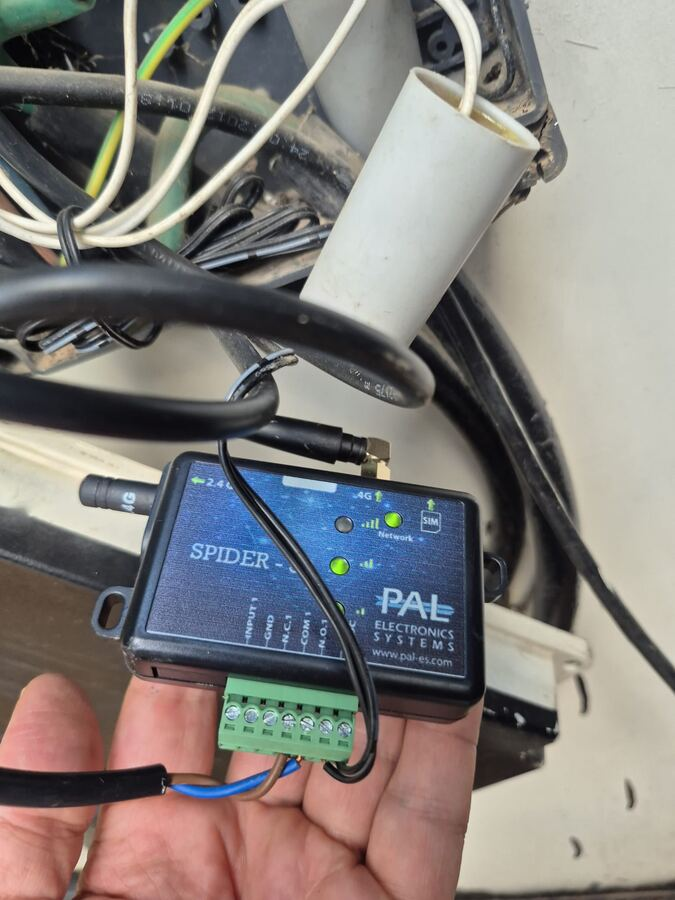
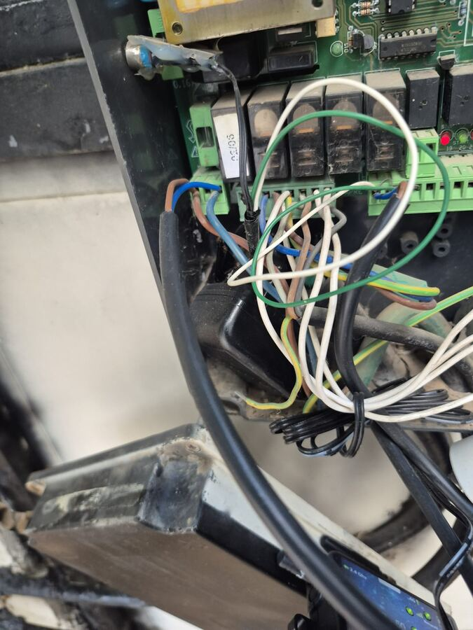

Jak zastąpiłem PalGate przekaźnikiem Zigbee za $10
Moja brama wjazdowa otwierała się z telefonu przez PalGate Spider-50: skrzynkę 4G z własną kartą SIM, która potrzebuje pakietu danych. Wyjąłem ją i założyłem przekaźnik Zigbee, który kosztował $10 (około ₪37), jednorazowo. Teraz otwieram bramę kafelkiem w ZigDash, w domu i z dowolnego miejsca.
Około ₪770 za nowy Spider-50 w izraelskich sklepach, plus karta SIM z danymi do odnawiania, albo około ₪37 jednorazowo za przekaźnik, na hubie Zigbee, który już masz.
Jak telefon otwiera bramę
Sterownik bramy ma wejście otwierania (lub startu): dwa zaciski, które otwierają bramę, gdy zostaną ze sobą połączone, dokładnie jak przycisk na pilocie do bramy. Spider to przekaźnik z kartą SIM. Gdy poprosi go o to aplikacja PalGate albo połączenie telefoniczne, na chwilę łączy te dwa zaciski.
Przekaźnik Zigbee robi to samo. Jedyna różnica polega na tym, kto każe mu zewrzeć styk: twój własny hub Zigbee w domu, a nie karta SIM, za którą trzeba ciągle płacić.


Czego potrzebujesz
- Przekaźnik Zigbee ze stykiem bezpotencjałowym. Mój to "1 channel Zigbee/WiFi Tuya smart relay, dry contact NO/NC/COM" z AliExpress, około $10. Sprzedawany jest w wersji WiFi i Zigbee: wybierz Zigbee (na płytce jest moduł ZT3L). Jest też sprzedawany na różne napięcia zasilania; wziąłem wersję AC 85–250V.
- Styk bezpotencjałowy to najważniejsza część. Styk bezpotencjałowy (suchy) to zwykły łącznik bez własnego napięcia: łączy tylko COM z NO, dokładnie jak przycisk pilota. Przekaźnik, który podaje napięcie na swoje zaciski (taki do włączania lampy), może uszkodzić wejście sterownika bramy. Szukaj oznaczenia "dry contact" i zacisków opisanych COM, NO i NC.
- Hub Zigbee2MQTT w domu, którego zasięg dochodzi do bramy. Ja już miałem taki (SMLIGHT SMHUB) dla reszty domu. Jeśli nie masz, zobacz Huby.
- ZigDash na telefonie (Google Play lub App Store). Otwieranie bramy w domu jest bezpłatne. Do otwierania jej z dowolnego miejsca służy zdalne sterowanie ZigDash Pro: jednorazowy zakup, bez abonamentu.

1. Sparuj przekaźnik z ZigDash
Najpierw sparuj go w domu, na stole, zanim trafi do skrzynki bramy.
- Podłącz zasilanie do przekaźnika.
- W ZigDash otwórz Urządzenia i dotknij Rozpocznij parowanie.
- Naciśnij i przytrzymaj przycisk przekaźnika, aż dioda zacznie migać. To przełącza go w tryb parowania.
- ZigDash pokazuje Gotowe z nowym urządzeniem. Zmień jego nazwę na Brama.
Włącz go i wyłącz kilka razy i posłuchaj kliknięcia przekaźnika.
2. Wyjmij Spidera
- Znajdź dwa przewody, które biegną z wyjścia przekaźnika Spidera (COM1 i N.O.1) do wejścia otwierania sterownika bramy. Oznacz je.
- Odkręć listwę zaciskową Spidera i odłącz zasilanie Spidera.

3. Podłącz przekaźnik
- Wyjście: dwa przewody wejścia otwierania podłącz do COM i NO przekaźnika. NC zostaw puste. Przy styku bezpotencjałowym kolejność nie ma znaczenia.
- Zasilanie: wersja AC 85–250V przyjmuje napięcie sieciowe bezpośrednio, jak ładowarka do telefonu: dwa przewody, fazowy i neutralny, z zasilania 230V bramy.
- Zamknij obudowę przekaźnika, umieść go w suchym miejscu i z powrotem włącz bezpiecznik.
4. Kafelek Brama w ZigDash
- Na dashboardzie dotknij Dodaj z urządzenia i wybierz Brama.
- Dotknij kafelka: przekaźnik zwiera styk i brama zaczyna się ruszać, tak jak z pilotem.
- Wejście otwierania bramy oczekuje krótkiego naciśnięcia, jak przycisk pilota; Spider domyślnie zwiera styk na 2 sekundy. Wiele przekaźników z bezpotencjałowym stykiem ma tryb impulsowy (inching), który sam się wyłącza: jeśli Zigbee2MQTT pokazuje go dla twojego przekaźnika, ustaw około 2 sekund, a każde dotknięcie będzie jednym naciśnięciem. Jeśli nie, wyłącz kafelek po sekundzie czy dwóch. Styk, który zostaje zwarty, może liczyć się jako długie naciśnięcie, co w niektórych bramach oznacza zatrzymanie albo pozostawienie bramy otwartej. Sceny i automatyzacje tylko włączają przekaźnik, więc używaj ich do bramy dopiero z włączonym trybem impulsowym.
- Z dowolnego miejsca: z ZigDash Pro włącz zdalne sterowanie, a ten sam kafelek działa poza domem, bez otwierania portu na routerze i bez miesięcznej opłaty. Obejmuje do pięciu telefonów; Udostępnij innemu telefonowi dodaje telefony rodziny jednym kodem QR.
Z czego rezygnujesz
Uczciwie wobec Spidera: potrafi rzeczy, których przekaźnik Zigbee nie potrafi:
| PalGate Spider | Przekaźnik Zigbee + ZigDash | |
|---|---|---|
| Koszt | Około ₪770 nowy (cena w sklepie), plus karta SIM z danymi | Około ₪37 jednorazowo; zdalne sterowanie to jednorazowy zakup ZigDash Pro |
| Połączenie | Własna karta SIM 4G, do tego Bluetooth do otwierania przy bramie: działa, gdy w domu nie ma internetu | Twój hub Zigbee w domu; poza domem potrzebny jest domowy internet |
| Sposoby otwierania | Aplikacja, połączenie telefoniczne, automatycznie po przyjeździe, Apple CarPlay i Android Auto, Siri, Asystent Google, Apple Watch | Kafelek w ZigDash; sceny i automatyzacje też, gdy przekaźnik sam daje impuls (krok 4) |
| Kto może otworzyć | Do 50 użytkowników w Spider-50, zarządzanych w aplikacji PalGate, każdy z harmonogramem dostępu i opcjonalnym ograniczeniem „tylko z bliska”; mogą też otwierać połączeniem telefonicznym | Telefony, którym udostępniasz dom (zdalnie do pięciu) |
| Otwarta czy zamknięta | Wejście na czujnik magnetyczny, z powiadomieniami | Dodaj czujnik drzwi Zigbee (około ₪37) i zobacz go w ZigDash |
| Chmura | Usługa PalGate | Brak w domu; zdalnie przez serwer pośredniczący ZigDash, z szyfrowaniem end-to-end |
Kiedy zostać przy Spiderze
W domu jednorodzinnym, gdzie rodzina otwiera jedną bramę, przekaźnik robi wszystko, czego potrzebowałem. Spider nadal jest lepszym wyborem, gdy:
- bramę otwiera wiele osób: budynek, sąsiedzi, osoba sprzątająca, goście. Spider-50 obsługuje do 50 użytkowników z harmonogramami, a otworzyć mogą połączeniem telefonicznym.
- brama jest daleko od domu, poza zasięgiem twojej sieci Zigbee, nawet z urządzeniem po drodze. Dla 4G odległość nie ma znaczenia.
- brama musi się otworzyć, gdy hub nie działa albo gdy pada domowy internet, a ciebie nie ma w domu. Spider ma własne połączenie i Bluetooth przy bramie.
- chcesz, żeby otwierała się sama, gdy podjeżdżasz, przez Apple CarPlay lub Android Auto.
Albo zostaw oba. Podłącz COM i NO przekaźnika do tego samego wejścia otwierania w sterowniku bramy co Spider. Działają jak dwa przyciski tej samej bramy: sąsiedzi zostają przy PalGate, a ty otwierasz z ZigDash. Najpierw włącz tryb impulsowy (krok 4): zwarty styk trzyma wejście otwierania, brama może zostać otwarta, a naciśnięcie Spidera nic nie da.